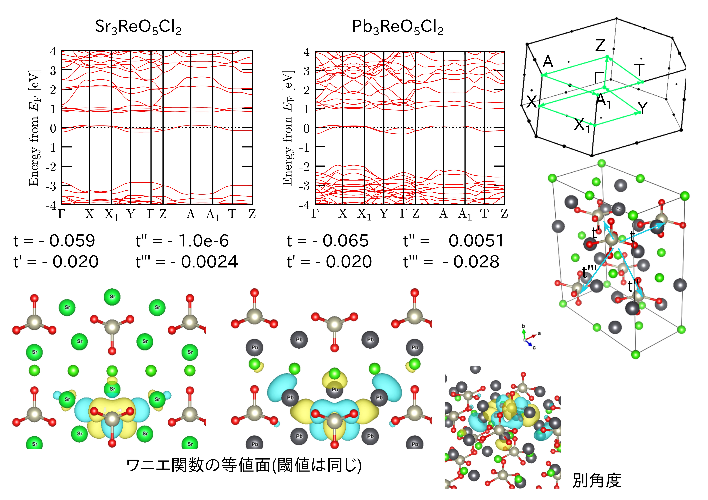

Pleochroism and Low-dimensionalization of local spin (多色性とスピンの低次元化) : A3ReO5X2
A3ReO5Cl2における異方的三角格子
平井氏らによって合成されたレニウム酸化物化合物Ca3ReO5Cl2は、
レニウムの周りにピラミッド状に配位する酸素原子による結晶場分裂によって、多色性[1]や2次元的電子状態、
そしてフラストレーションによる局在スピンの1次元化という興味深い性質が現れる[2]。
また、その類縁物質としてカチオンAがSrやBaのものも合成され、これらの物質群に対する系統的な研究も行われた[3]。
そうした中でカチオンAをPbにしたものも合成されたが、これはそれまでのA3ReO5Cl2とは異なる磁気的性質を示した。
我々は第一原理計算による解析を行い、この物質の磁性を担うdxy軌道がPbのp軌道と強く混成して3次元性を持つためであることを明らかにした。

- "Visible" 5d Orbital States in a Pleochroic Oxychloride
D. Hirai, T. Yajima, D. Nishio-Hamane, C. Kim, H. Akiyama, M. Kawamura, T. Misawa,
N. Abe, T. Arima, and Z. Hiroi,
J. Am. Chem. Soc. 139, 10784 (2017).
- One-dimensionalization by Geometrical Frustration in the Anisotropic Triangular Lattice
of the 5d Quantum Antiferromagnet Ca3ReO5Cl2
D. Hirai, K. Nawa, M. Kawamura, T. Misawa, and Z. Hiroi,
J. Phys. Soc. Jpn. 88, 044708 (2019).
- Rhenium oxyhalides: a showcase for anisotropic-triangular-lattice quantum antiferromagnets
M. Gen, D. Hirai, K. Morita, S. Kogane, N. Matsuyama, T. Yajima, M. Kawamura, K. Deguchi, A. Matsuo, K. Kindo, Y. Kohama, Z. Hiroi,
arXiv:2311.06040.